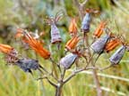

Pig's ear
Cotyledon orbiculata
Other names
round leafed navel wort
Description
Succulent plant that grows to about 60 cm tall.The leaves are fleshy, light green, grey green or grey with a red margin. Flowers are bell like, pendulous and range in colour from light orange red to dark purple red. The fruit is in a papery capsule, narrow at the top with 5 chambers containing many small brown seeds.
Similar plants
There are a variety of similar garden plants most are probably poisonous.
Distribution
Found in gardens and as an escape in numerous locations on both islands especially coastal slopes and beaches.
Toxin
Bufadienolides which cause a disease called ‘Krimpsiekte’ in South Africa. The lethal dose in sheep is about 0.7 to 1.0 g DM/kg of the plant.
Species affected
Cattle, sheep, goats, rabbits, horses, dogs and chickens.
Clinical signs acute
Myocardial necrosis and gastrointestinal signs. Profuse scouring, gastrointestinal pain and sudden death have been reported in cattle.
Clinical signs chronic
Chronic ingestion has been reported to cause paresis in sheep and goats. One report in cattle resulted in knuckling over of the hind feet, gastrointestinal pain, diarrhoea, dehydration and weight loss.
Post mortem signs
Unremarkable lesions in bulls that died after ingesting pig’s ear. Histological lesions in the kidneys of these bulls included expanded renal tubules due to homogeneous eosinophilic material.
Diagnosis
History of exposure to the plant, clinical signs and necropsy findings of plant material in the gastrointestinal tract.
Differential diagnosis
Treatment
Symptomatic
Prognosis
Depends on the amount ingested. Generally poor. Fatally poisoned sheep may linger for weeks.
Prevention
Avoid letting hungry stock have access to the plants.
References
Conner H.E. The Poisonous Plants In New Zealand. 1992. GP Publications Ltd, Wellington
Parton K, Bruere A.N. and Chambers J.P. Veterinary Clinical Toxicology, 2nd ed. 2001. Veterinary Continuing Education Publication No. 208
Roberts, V. Unusual plant poisoning in a mob of Friesian bulls. VetScript May 2001. 6 7.
 plant |
|
|
|
|
|
|
|
 |
||
|
|
|
|